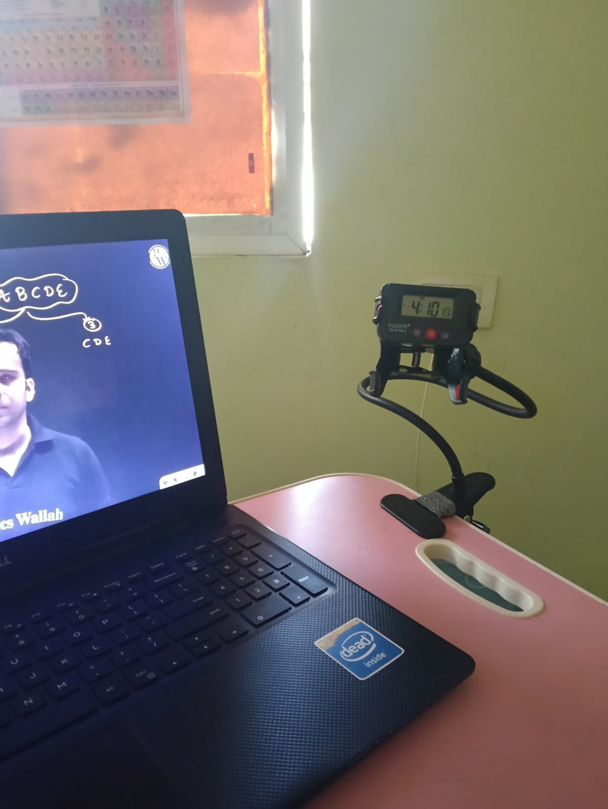
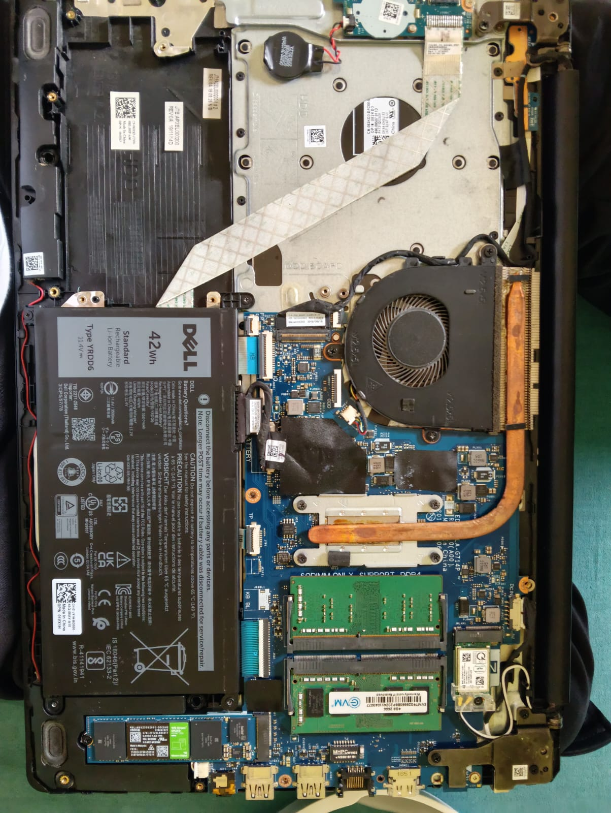
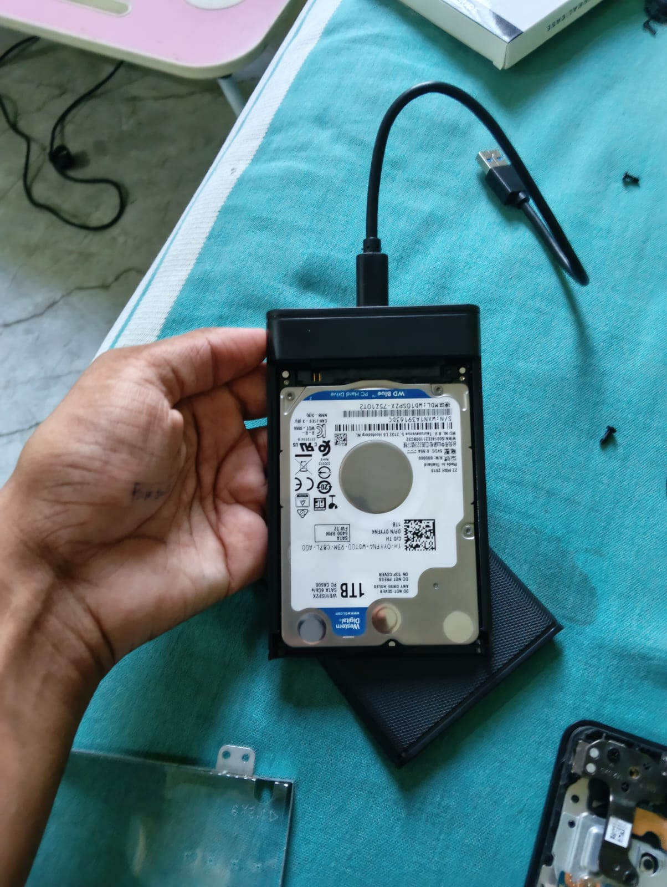
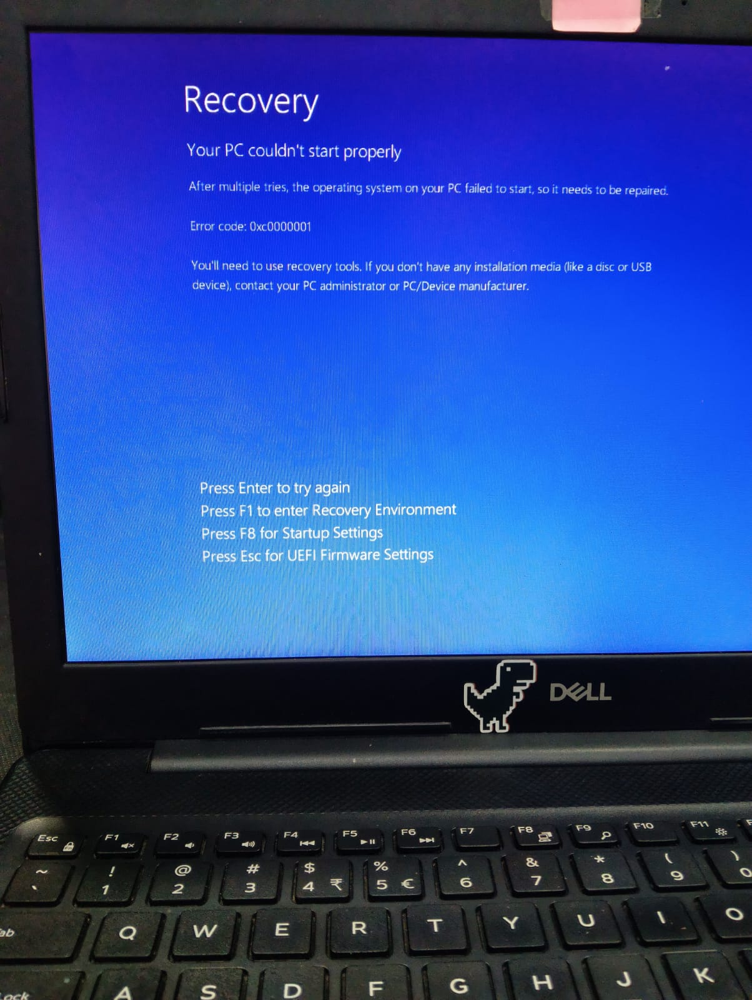
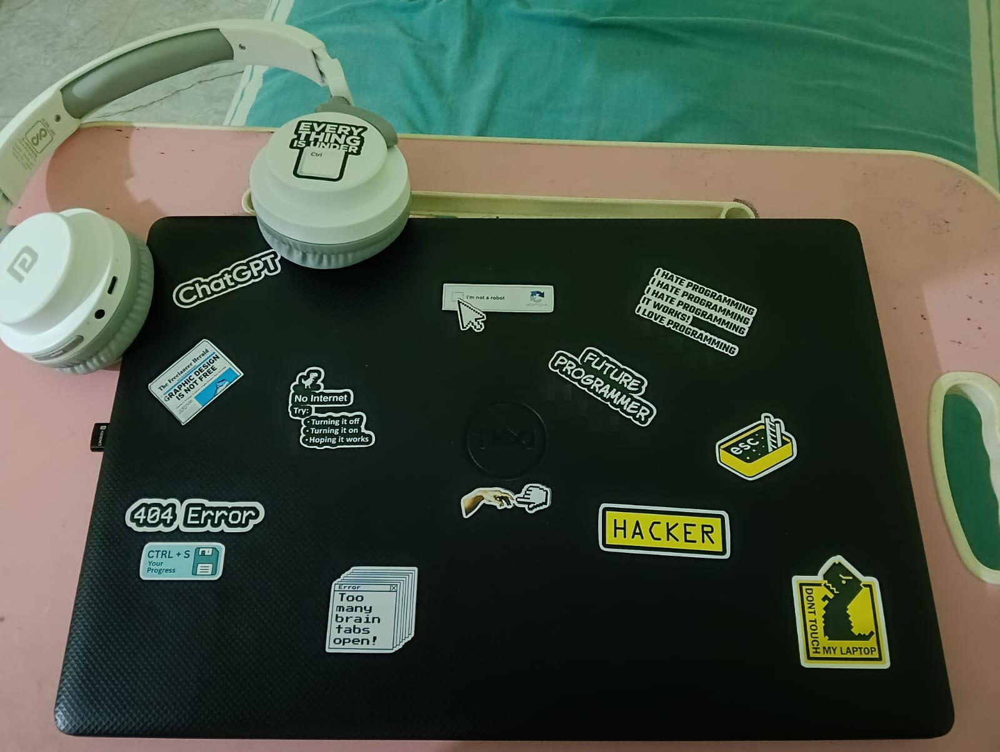

THE ONE
THAT SHOWED UP.
Classes. Coding. Projects. Research. Random ideas at midnight. Somehow this machine was always there.

ON
RUNNING

MEET THE
REAL TEAM.
Motherboard. RAM. SSDs. Battery. A whole little ecosystem hiding beneath the keyboard.
CURIOSITY WIN
DRIVE.
Once an internal hard disk. Now an external drive.
RETIREMENT WAS DENIED.
REASSIGNED
404
THE
DARK ERA.
Things went wrong. Files disappeared. Error messages appeared. Patience disappeared shortly after.

STILL
HERE.
After the errors. After the panic. After all of it.
SURVIVOR
THIS IS
THE DESK.
Laptop. Headphones. Stickers. Ideas everywhere. This is where most of the chaos begins.
MY LAPTOP.

IN PROGRESS